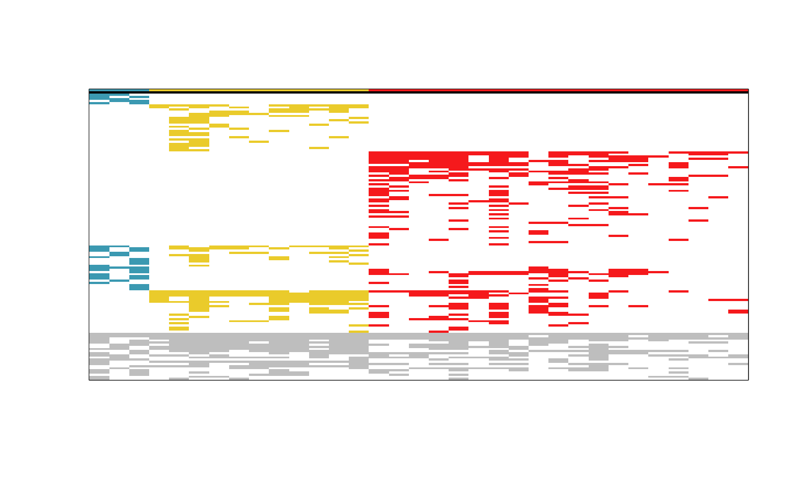

Interactively explore a tabulation of a phytosociological matrix
Source:R/explore_tabulation.R
explore_tabulation.RdThis function plots an interactive image of a tabulation.
Arguments
- tab
A list as returned by the
tabulation()function.- palette
A character with the name of the colour palette (one of
grDevices::hcl.pals()to be passed togrDevices::hcl.colors(). Defaults to "Vik".
Value
Returns invisibly, although it prints taxa names on the console upon the user click on the figure.
Details
The function explore.tabulation accepts an object returned by the
tabulation() function, plotting a condensed image of the
respective tabulated matrix, permitting the user to click on the coloured
blocks and receive the respective list of taxa names on the console.
Author
Tiago Monteiro-Henriques. E-mail: tmh.dev@icloud.com.
Examples
# Getting the Taxus baccata forests data set
data(taxus_bin)
# Creating a group partition, as presented in the original article of
# the data set
groups <- rep(c(1, 2, 3), c(3, 11, 19))
# Removing taxa occurring in only one relevé in order to
# reproduce exactly the example in the original article of the data set
taxus_bin_wmt <- taxus_bin[rowSums(taxus_bin) > 1, ]
# Sorts the phytosociological table, putting exclusive taxa at the top and
# plots an image of it
tabul <- tabulation(
m_bin = taxus_bin_wmt,
p = groups,
taxa_names = rownames(taxus_bin_wmt),
plot_im = "normal",
palette = "Zissou 1"
)

# This creates an interactive plot (where you can click)
if (interactive()) {
explore_tabulation(tabul, palette = "Zissou 1")
}